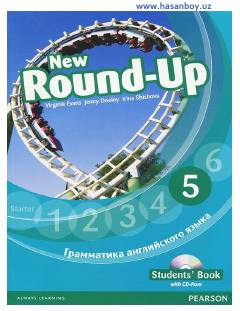

NRO'rta bosqich o'quvchilari uchun ingliz tili grammatikasini amaliy mashqlar orqali o'rganish qo'llanmasi.
Ushbu kitob o'rta bosqichdagi ingliz tili o'rganuvchilari uchun mo'ljallangan bo'lib, zamonaviy grammatika qoidalarini rang-barang jadvallar va qiziqarli mashqlar yordamida mustahkamlashga yordam beradi. Unda zamonlar, fe'llar va boshqa asosiy grammatik mavzular tushuntirilib, uy vazifalari va mustaqil shug'ullanish uchun qulay topshiriqlar taqdim etilgan.